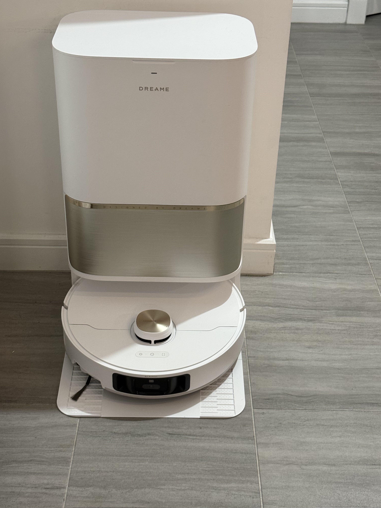
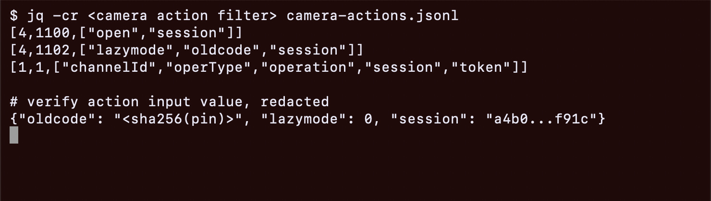

Tracing the L50s Pro Ultra camera PIN
The PIN digest is in a JSON string passed as an MIoT action input.
I bought a Dreame L50s Pro Ultra to see how its live camera is authorized. Dreame's manual identifies it as RLL88HE and lists an IR camera, an HD camera, and microphones. Tasshack found that current firmware gates the stream with a PIN. I wanted to locate that check.

Provider selection
Tasshack's camera research lists the L50s Pro Ultra under suggested Tencent models and calls the stream "session-based and on-demand." Some devices select Tencent or Alibaba by region. The unit advertised STREAM_TX. I also read camera service property 10001/11, named STREAM_VENDOR in the integration's property map.
The PIN request has two JSON layers
I filtered the camera requests to service 10001. The PIN verification uses method=action, action ID 4, and input ID 1102. Its value is a JSON string inside the outer JSON request. A single parse leaves oldcode and session inside a string.
{
"method": "action",
"params": {
"siid": 10001, "aiid": 4,
"in": [{"piid": 1102,
"value": "{\"oldcode\":\"<sha256>\",\"lazymode\":0,\"session\":\"<sid>\"}"}]
}
}jq -cr '
.data
| select(.method == "action" and .params.siid == 10001)
| [.params.aiid, .params.in[0].piid,
(.params.in[0].value | fromjson | keys)]
' miio.jsonlThe filter keeps action IDs and field names while dropping the PIN hash and session value. The client hashes only four digits. A captured oldcode can be checked against all 10,000 PINs. For one candidate, printf '%s' '0042' | shasum -a 256 preserves the leading zeros and adds no newline.
The reduced sequence is 4/1100 to open the monitor, 4/1102 to verify the PIN, and 1/1 to start video. The same session ID appears in all three requests.

Input 1102 is easy to misread. The property map names it STREAM_VERIFY_CODE, but the activation request puts it under params.in for action 4. Reading property 10001/1102 alone misses this call.
The session ID is client generated
The client generates a fresh session ID for the open request. The verify request sends oldcode as the SHA-256 hex digest of the four-digit PIN, with lazymode=0 and the same session.
The video request then sends token=tx, channelId=<productId>/<deviceName>, and that session ID. Web3Dave's open implementation matches this action order.
I compared a wrong PIN with a correct one by recording both replies. The failed 4/1102 reply had a nonzero data.result.code. The 1/1 action still went out, but it also failed and no media packets arrived. Web3Dave's _check() logs a failed reply but does not stop the next action. A trace containing 1/1 therefore does not show that the PIN was accepted.
After a successful start, the viewer calls dreame-third-video/tx/dev/getP2PInfo and passes the returned p2pInfo to the XP2P client. The MIoT session ID and this transport data are separate values.
The remaining check is inside the robot's 10001/4 handler. I want to see where it stores an accepted session, how it counts failed PIN attempts, and whether the video action checks that session again.